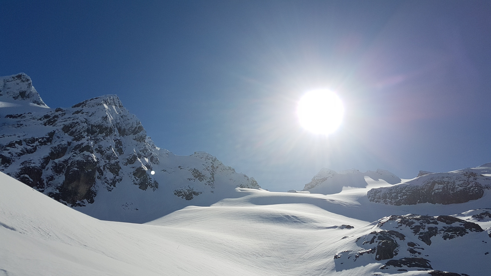

Glaciar Vinciguerra
Trekking glaciar Vinciguerra
Este trekking en particular fue un desafio para nosotros, una larga caminata por turbales, bosques congelados, arroyos, cruzar la laguna de los tempanos (en invierno todavia esta congelada) y un bosque. Es agotador, pero realmente vale la pena.
El recorrido hacia el glaciar Vinciguerra, es de dificultad media, se necesita el uso de cranpones y bastones de trekking; se recomienda inicar el ascenso por la mañana, ya que la duracion de todo el recorrido es de 5 horas.